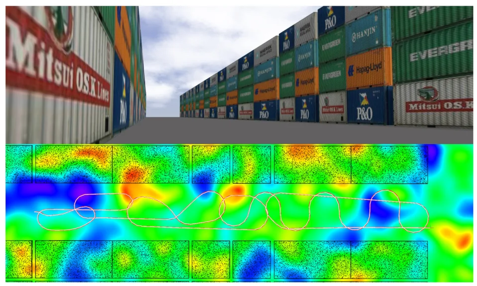
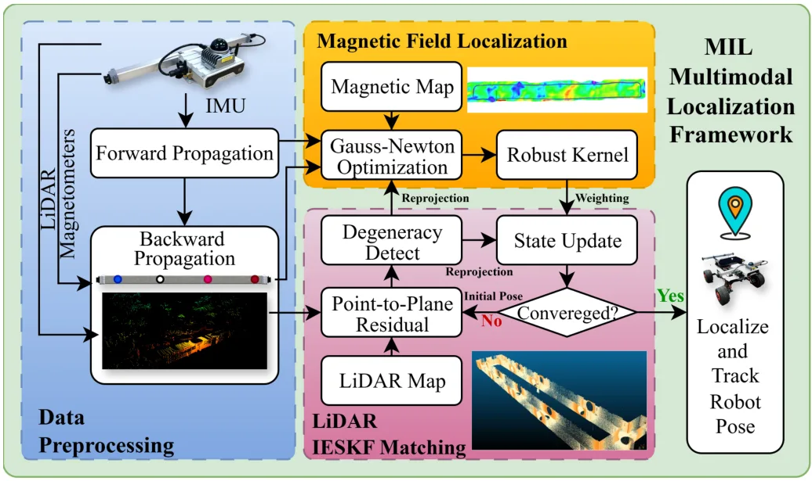
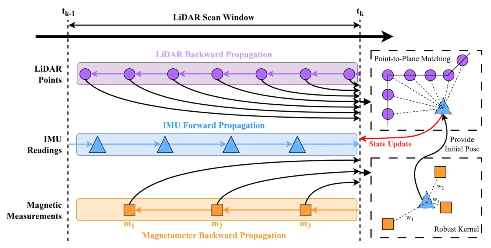
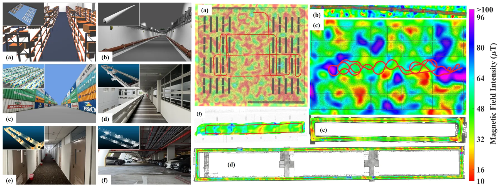
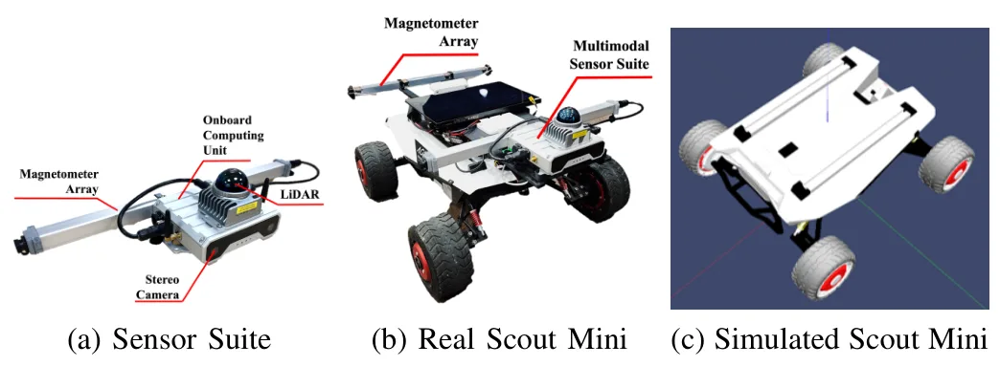
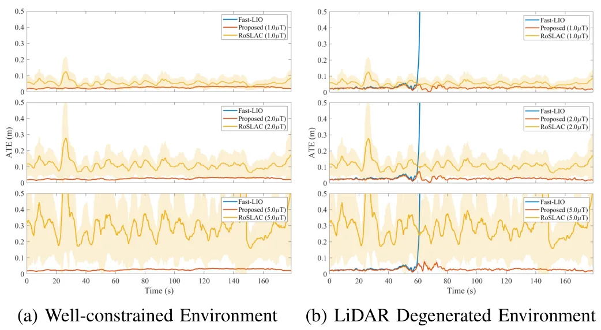
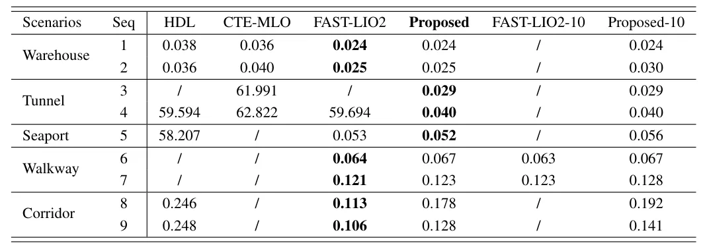
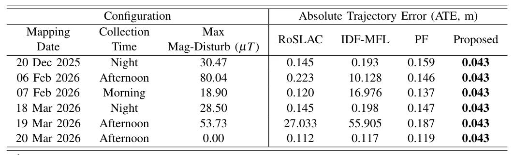

MIL-LC：鲁棒磁场-惯性-LiDAR 融合多模态定位框架MIL-LC: A Robust Magnetometer-Inertial-LiDAR Fusion Multimodal Localization Framework
对室内 AMR、GNSS-denied 定位和多模态鲁棒融合有直接参考价值；关键风险在磁场地图长期稳定性、异常磁干扰检测和地图更新成本。
一句话工作总结
将环境磁场地图、IMU 和 LiDAR 融合，用磁场信息补偿 GNSS-denied 室内场景中的几何退化和纹理不足定位问题。
摘要
办公室、酒店、地下停车场等 GNSS-denied、几何重复或弱纹理环境仍是 AMR 可靠定位难题。MIL-LC 提出磁力计-惯性-LiDAR 多模态定位框架和定制传感器套件，利用 ambient magnetic field 不依赖几何/纹理、也无需额外 beacon 基础设施的互补特性，在 LiDAR 几何退化或长期部署中磁场地图发生变化时仍提供稳健定位。相比过去主要基于智能手机的行人磁场融合研究，本文面向 AMR 系统给出仿真和真实环境验证，强调低部署成本和多源信息互补。
Localization in challenging environments, such as GNSS-denied, geometrically repetitive, or textureless scenes commonly found in offices, hotels, and underground parking facilities, remains an open problem for reliable autonomous mobile robot (AMR) deployment. Single-modality localization methods are inherently limited by the constraints of individual sensors. Although multimodal fusion frameworks have shown improved robustness, most existing approaches still rely heavily on geometric or texture features, or on infrastructure-based beacons, which increase installation and maintenance costs while reducing deployment flexibility. Recently, ambient magnetic field (AMF)-based localization has attracted growing attention because it does not depend on geometric or texture features, nor does it require additional infrastructure, making it a promising complementary modality for AMR localization. However, existing studies have only explored such fusion in pedestrian scenarios using smartphone-mounted sensor suites, and practical solutions for AMR systems remain largely unexplored. To address this gap, this article proposes a magnetometer-inertial-LiDAR fused multimodal localization framework with a custom-designed sensor suite, termed MIL-LC, which provides reliable localization even when LiDAR suffers from geometric degeneration or when the magnetic map changes during long-term deployment. Extensive experiments in both simulation and real-world environments demonstrate that the proposed MIL-LC framework achieves robust and accurate localization performance.
中文解读摘录
- 英文题名：SA-LIVO: Efficient LiDAR-Inertial-Visual Odometry with Subspace-Aware Degeneracy Handling
- 作者：Yinong Cao, Xin He, Yuwei Chen, Shijie Liu, Chunlai Li, Jianyu Wang
- 类别/来源：cs.RO；20 pages, 12 figures, 5 tables；采集 score=15；阅读优先级=9.2/10。
- 一句话总结：在同一个 InEKF 优化环内对 LiDAR-visual 信息矩阵做特征分解，按可观测方向选择性融合视觉约束，让视觉主要补偿 LiDAR 退化方向而不干扰已约束方向。
- 为什么值得看：这篇非常贴近实际 LIVO 系统痛点：LiDAR 在走廊、平面、重复结构中退化，视觉又会受光照/纹理影响。SAIF 的“按 eigendirection 线性夹紧软门控”比传统 modality-level gating 更细粒度；摘要还声称视觉 Jacobian 可在迭代外复用，带来 12.3 ms/frame laptop CPU、26.8 ms/frame embedded ARM 且峰值内存降低 3.6–6.3x。后续应重点复核退化方向判定阈值、和 FAST-LIO/LIO-SAM/视觉直接法基线的公平性，以及代码开源进度。
- 标签：LIVO、LiDAR 退化、子空间融合、InEKF
- 链接：abs / PDF
图表/页面预览
{kind=link}

{kind=link}

{kind=link}

{kind=link}

{kind=link}

{kind=link}

{kind=link}

{kind=link}
